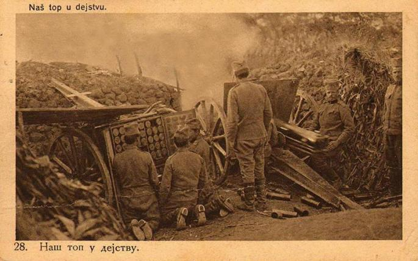

| Узроци | Повод | Хронологија догађаја | Најзначајније српске војсковође | Kрај рата и последице |
Први светски рат је трајао од 1914. до 1918. године. У њему је учествовала већина великих светских сила, груписаних у два сукобљена војна савеза: Савезника (окупљених око Тројне Антанте) и Централних сила.[1] Више од 70 милиона људи је било под оружјем, а од тога преко 60 милиона људи у Европи је било мобилисано у један од највећих ратова у историји.[2][3] Последице рата су биле да је убијено више од 15 милиона људи, 20 милиона рањено, а директне учеснице рата претрпеле су и огромна разарања држава и привреда.[4] Први светски рат познат је и под именима Велики рат и Светски рат (до избијања Другог светског рата).
